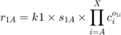
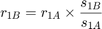
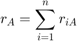

Contents
function r = rate(c, k, sO, rO)
% calculates the rate of reaction for a irrevesable CSTR % % c - Current conc. [nx1] (mol/L) [c_A; c_B; c_C; ...c_X] % k - Reaction constants [1xm] L/(mol min) [k1, k2, ...kn] % s - Stoichiometry [nxm] [s_1A, s_2A, s_3A, ...snX; % s_1B, s_2B, s_3B, ...snX; % . . . . % . . . . % . . . . % s_1X, s_2X, s_3X, ...snX]; % o - Reaction order [nxm] [o_1A, o_2A, o_3A, ...onX; % o_1B, o_2B, o_3B, ...onX; % . . . . % . . . . % . . . . % o_1X, o_2X, o_3X, ...onX]; % % r - rate of con/gen [nx1] (mol/L min) [r_A; r_B; r_C; ...r_X];
missing inputs
if nargin < 4 || isempty(rO) %no reaction order rO = -sO(sO<0); % assume elementary end
Not enough input arguments.
Error in rate (line 23)
rO = -sO(sO<0); % assume elementary
calculate the rate
using the equations:



end